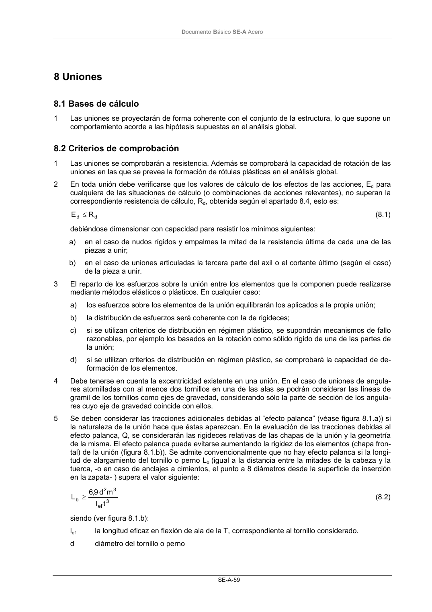

DB-SE-A Acero · edición 2007-10-23 · capa oficial
Documento DB-SE-A-oficial · SHA-256 del PDF 9ed9ea694aabfbda3bfbbef40dfe9223fde05d13c35bc2ba9751e5a96a22a64f
Página física 61 de 168.
Copia fiel del PDF fuente · Fuente oficial
Ficha de la disposición en la fuente oficial
Formato: Texto de la página (Markdown)
Documento Básico SE-A Acero SE-A-59 8 Uniones 8.1 Bases de cálculo 1 Las uniones se proyectarán de forma coherente con el conjunto de la estructura, lo que supone un comportamiento acorde a las hipótesis supuestas en el análisis global. 8.2 Criterios de comprobación 1 Las uniones se comprobarán a resistencia. Además se comprobará la capacidad de rotación de las uniones en las que se prevea la formación de rótulas plásticas en el análisis global. 2 En toda unión debe verificarse que los valores de cálculo de los efectos de las acciones, Ed para cualquiera de las situaciones de cálculo (o combinaciones de acciones relevantes), no superan la correspondiente resistencia de cálculo, Rd, obtenida según el apartado 8.4, esto es: d d R E ≤ (8.1) debiéndose dimensionar con capacidad para resistir los mínimos siguientes: a) en el caso de nudos rígidos y empalmes la mitad de la resistencia última de cada una de las piezas a unir; b) en el caso de uniones articuladas la tercera parte del axil o el cortante último (según el caso) de la pieza a unir. 3 El reparto de los esfuerzos sobre la unión entre los elementos que la componen puede realizarse mediante métodos elásticos o plásticos. En cualquier caso: a) los esfuerzos sobre los elementos de la unión equilibrarán los aplicados a la propia unión; b) la distribución de esfuerzos será coherente con la de rigideces; c) si se utilizan criterios de distribución en régimen plástico, se supondrán mecanismos de fallo razonables, por ejemplo los basados en la rotación como sólido rígido de una de las partes de la unión; d) si se utilizan criterios de distribución en régimen plástico, se comprobará la capacidad de de- formación de los elementos. 4 Debe tenerse en cuenta la excentricidad existente en una unión. En el caso de uniones de angula- res atornilladas con al menos dos tornillos en una de las alas se podrán considerar las líneas de gramil de los tornillos como ejes de gravedad, considerando sólo la parte de sección de los angula- res cuyo eje de gravedad coincide con ellos. 5 Se deben considerar las tracciones adicionales debidas al “efecto palanca” (véase figura 8.1.a)) si la naturaleza de la unión hace que éstas aparezcan. En la evaluación de las tracciones debidas al efecto palanca, Q, se considerarán las rigideces relativas de las chapas de la unión y la geometría de la misma. El efecto palanca puede evitarse aumentando la rigidez de los elementos (chapa fron- tal) de la unión (figura 8.1.b)). Se admite convencionalmente que no hay efecto palanca si la longi- tud de alargamiento del tornillo o perno Lb (igual a la distancia entre la mitades de la cabeza y la tuerca, -o en caso de anclajes a cimientos, el punto a 8 diámetros desde la superficie de inserción en la zapata- ) supera el valor siguiente: 3 ef 3 2 b t l m d 9,6 L ≥ (8.2) siendo (ver figura 8.1.b): lef la longitud eficaz en flexión de ala de la T, correspondiente al tornillo considerado. d diámetro del tornillo o perno
